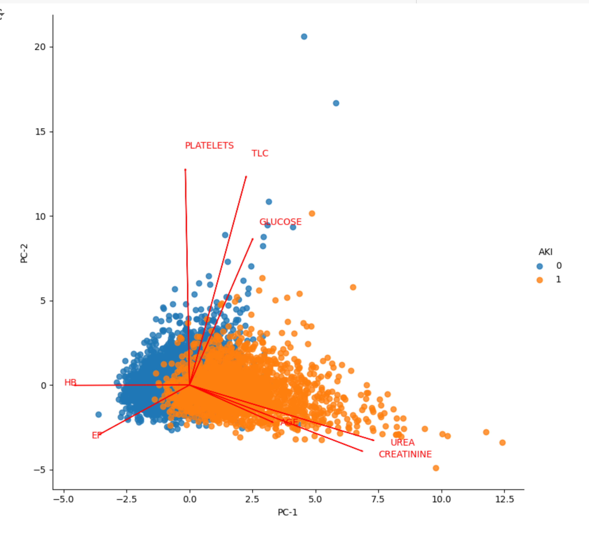
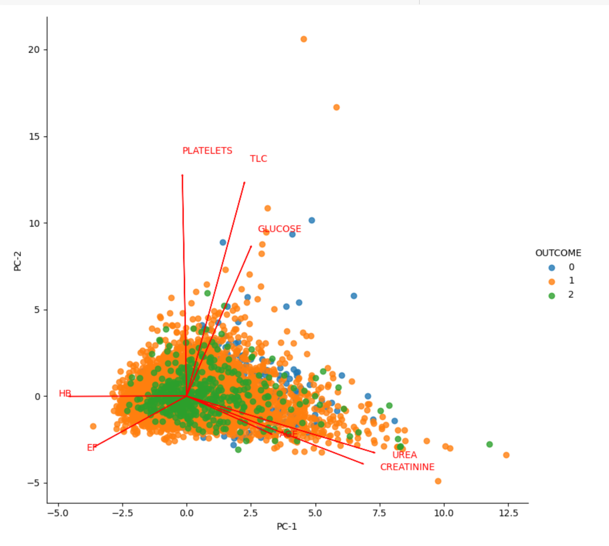
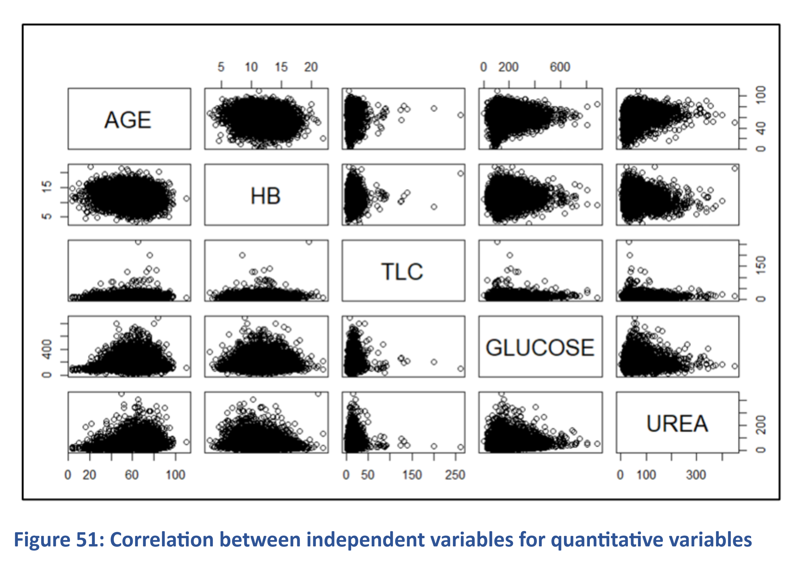
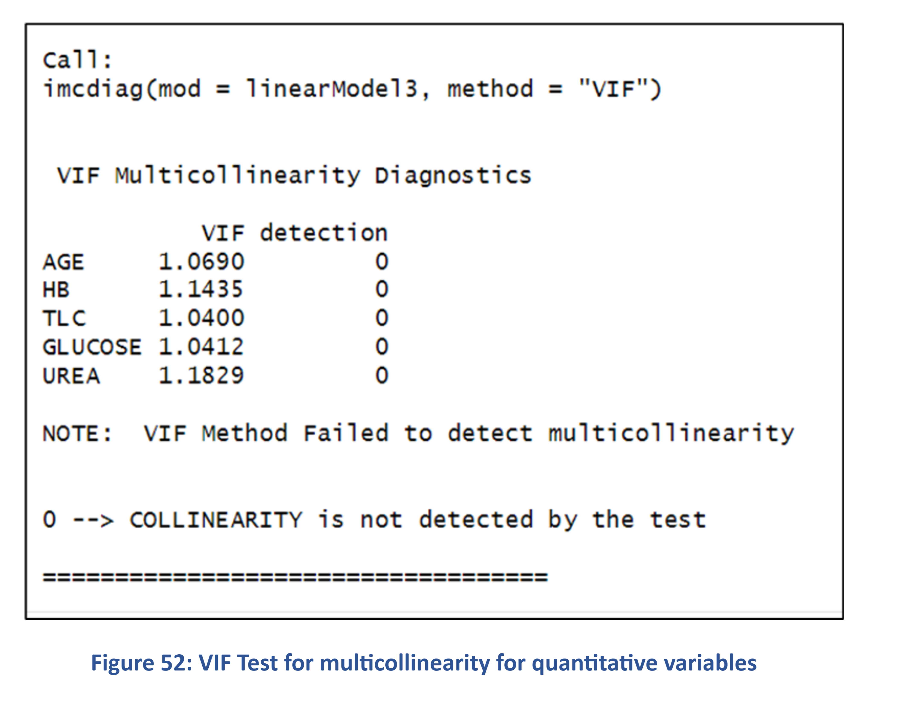
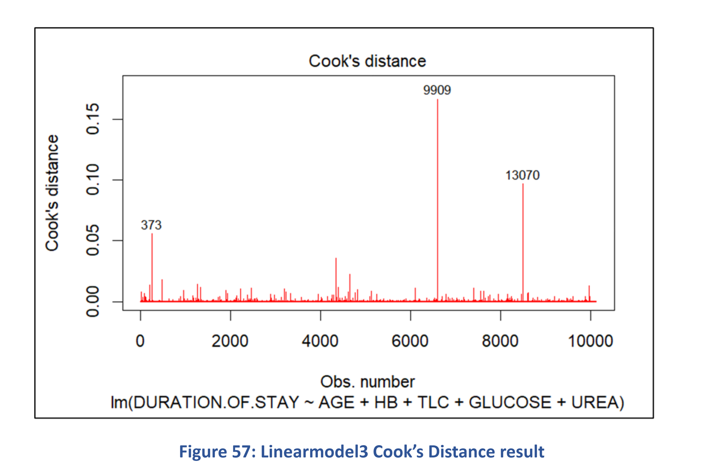

Back
Go to Section 1
Introduction
The human body comprises a diverse array of cells that collectively form tissues and organ systems. At the heart of this intricate network is the cardiovascular system, which is responsible for pumping blood throughout the body and sustaining life. My analysis focuses on patients admitted to the hospital with cardiovascular diseases, a leading cause of mortality globally.
An analysis of the top five leading causes of death in Canada from 2017 to 2021 reveals that heart-related diseases consistently rank among the most significant contributors, occupying the second and fourth positions for the majority of the years.

We tried to identify the following from our analysis
- Observing patients admitted to the hospital with diverse cardiovascular diseases.
- Analyzing the underlying conditions associated with the patient such as heart failure, acute kidney disease.
- Analyzing the outcome of the patient for the duration of hospital admission.
We have selected two datasets from Kaggle and described them in the next section.
Datasets Utilized
We have utilized the “Hospital Admissions Data” dataset (File size: 2.6 MB, Rows: 15757 K, Columns: 56) available in the Kaggle portal (https://www.kaggle.com/datasets/ashishsahani/hospital-admissions-data/discussion/302894?resource=download&select=HDHI+Admission+data.csv)in CSV format.
The Kaggle portal provides this dataset free of charge and can be used for research/project purposes. Details of their conditions are available in https://doi.org/10.3390/diagnostics12020241. This dataset is being provided under creative commons License (Attribution-Non-Commercial-Share Alike 4.0 International (CC BY-NC-SA 4.0)) https://creativecommons.org/licenses/by-nc-sa/4.0/.
This data was collected from patients admitted over a period of two years (1 April 2017 to 31 March 2019) at Hero DMC Heart Institute, Unit of Dayanand Medical College and Hospital, Ludhiana, Punjab, India. During the study period, the cardiology unit had 14,845 admissions corresponding to 12,238 patients. 1921 patients who had multiple admissions.


Description of Important Variables
As discussed previously, the initial dataset included a variety of variables.
- For qualitative variables, we counted the occurrences of the value '1'. If the count was below 1,000, we excluded the variable due to its relatively small contribution to the overall dataset.
- Most quantitative variables were retained, except for BNP (B-type natriuretic peptide), which had 10,000 missing entries. Additionally, Serial No. and MRD No. were excluded due to their lack of relevance to the analysis.
The key variables used in this project (as identified by certain models) are listed below.
The primary variables analyzed in this project were HEART.FAILURE, AKI(Acute Kidney Injury), OUTCOME, and DURATION.OF.STAY.


Research Questions
CONTINGENCY TABLE FOR INDEPENDENCE CHECKING

Heatmap with summary results (p-value) indicated test based on the difference applied 2x2
Table Contingency for pair of categorical variables
The test based on the difference suggests that Hypertension (HTN) is not a significant predictor of Heart Failure. The p-value associated with HTN exceeds the significance level of 0.05, and consequently we cannot consider HTN as an explanatory variable of HEART.FAILURE.
However, Raised Cardiac Enzymes appears to be a significant predictor of Heart Failure. Additionally, Prior Cardiac Medical Procedures (PRIOR.CMP) and Smoking can be considered as potential explanatory variables for Heart Failure, as they are independent of each other but related to the outcome variable.
Based on these findings, the heatmap analysis suggests several potential models for predicting Heart Failure with at least two explanatory variables:
- Model 1: Raised Cardiac Enzymes, Prior Cardiac Medical Procedures, Smoking
- Model 2: Raised Cardiac Enzymes and Smoking
- Model 3: Prior Cardiac Medical Procedures and Raised Cardiac Enzymes
- Model 4: ST-Segment Elevation Myocardial Infarction(STEMI) and (DM)
- Model 5: Prior Cardiac Medical Procedures and Smoking
- Model 6: Acute kidney Injury(AKI) and ALCOHOL
- Model 7: Acute Coronary Syndrome(ACS) and Diabetes Mellitus(DM)
Alcohol Consumption is not a significant predictor of Acute Kidney Injury (AKI). Therefore, it should not be included as an explanatory variable in the model.
For the other ones, with at least two explanatory variables, the possibilities based on the heatmap are:
- Model 1: Raised Cardiac Enzymes, Prior Cardiac Medical Procedures, Smoking
- Model 2: Prior Cardiac Medical Procedures and Smoking
- Model 3: Raised Cardiac Enzymes and Smoking
- Model 4: ST-Segment Elevation Myocardial Infarction(STEMI) and (DM)
- Model 5:Heart Failure and Hypertension
- Model 6: Acute kidney Injury(AKI) and ALCOHOL
- Model 7: Acute Coronary Syndrome(ACS) and Diabetes Mellitus(DM)
- Model 8: Acute Coronary Syndrome(ACS) and Hypertension
Logistic Regression of Heart failure and Acute Kidney Injury

Probability of response variables Heart Failure and AKI in function of their most significant explanatory variables
indicated by the Logistic Regression model considering all other variables with means/medians of train part
Through first logisic regression for Heart failure we found that Platelets and Smoking are not significant predictors of Heart Failure. Platelets was not significant at the 5% level, and Smoking showed a counterintuitive negative effect. Therefore, these variables are removed from the model. It was checked if there is some problem of multicollinearity among the explanatory variables by checking Variance Inflation Factor (VIF), but it is possible to see below that only UREA and CREATININE presented moderate collinearity (2 < VIF < 5), but not severe (VIF > 5) and for this reason it was decided to keep them.
The final logistic regression model was also examined to see if certain quantitative variables were indicative of heart failure probability as expected. This was done by holding all other explanatory variables at their means (for quantitative variables) or medians (for qualitative variables) and analyzing results separately by gender.
The probability of heart failure rises with higher urea levels and lowers with increasing ejection fraction (EF), aligning with expected trends, as both deviate from American Heart Association recommended levels for healthy individuals. Since the final logistic model effectively captures heart failure probability, it was applied to the test set to assess prediction performance.
We followed the same procedure for Acute Kidney Injury, with CREATININE emerging as the most significant explanatory variable.
Principal Component Analysis(PCA) for Heart Failure, AKI and Outcome
Considering only the quantitative variables (scaled), by reducing the dimension to 6 principal companents, this represents 88.79% of the variability when considering all the features. The first principal component (PC-1) is responsible for 27.58% of this total, whereas the last one (PC-6) is responsible for 10.22%.



In all cases, UREA, CREATININE, and AGE show a positive correlation, while HB is negatively correlated with these factors. Conversely, PLATELETS, TLC, and GLUCOSE are positively correlated with each other, whereas EF is negatively correlated with them. Furthermore, most of the data points pertain to the Discharge class, which accounts for nearly 90% of the dataset.
LINEAR DISCRIMINANT ANALYSIS (LDA) on AKI and Heart Failure
For the LDA model, which assumes a normal variance-covariance matrix for each class, it is essential to check whether the quantitative variables used in the final logistic regression model are normally distributed. To do this, we plotted histograms and Q-Q plots for each quantitative variable and conducted the Kolmogorov-Smirnov and Shapiro-Wilk tests (limited to 5000 points due to constraints).
For both Heart Failure and AKI none of the quantitative variables were normally distributed, so only the qualitative variables from the final logistic regression model were used in the LDA modeling.
QUADRATC DISCRIMINANT ANALYSIS (QDA) on AKI and Heart Failure
The QDA statistical learning method, which does not strictly require variable normality, was applied using all explanatory variables from the logistic regression model. For QDA, a partition plot was generated for variable pairs to visualize the distribution of training units along with the model’s decision boundary.
For AKI, a partition plot was also created to identify the lowest error rate among associated variables. The STEMI category variable was included alongside other significant variables, aligning with the LDA model’s consideration of STEMI, to observe its error rate in conjunction with the others.
he partition plot reveals that for heart failure, AGE and EF have the lowest error rates, while for AKI, Creatinine and DM demonstrate the lowest error rates.
Classification Tree
Classification tree for heart failure

The sensitivity analysis of tree depth reveals that maximum test accuracy is achieved with a depth of 3, where the test accuracy is comparable to that of the training data. As the depth increases beyond 3, the performance difference between training and test sets grows, indicating that the model is becoming overfitted.
For the final tree (Depth = 3), the most relevant explanatory variables for predicting heart failure appear at the top (EF and UREA). The model predicts "No Heart Failure" for EF values of 35.5 or higher. However, for EF values below 35.5, the model typically predicts "Heart Failure," except when EF > 27.5 and UREA ≤ 41.5. No terminal node (leaf) achieved full purity, but the condition EF > 35.5, UREA ≤ 36.5, and STABLE_ANGINA = 0 reached the highest purity (Gini score close to 0).
The scatterplot explains the classification tree more clearly.
Classification tree for Acute Kidney Injury

The sensitivity analysis of tree depth shows that the optimal test accuracy is achieved with a depth of 2. While accuracy continues to improve for the training data at depths 4 and 7, the test accuracy remains similar to that at depth 2. As depth increases, the discrepancy between training and test accuracy widens due to improved training performance, indicating overfitting. Therefore, a depth of 2 was selected for the classification tree to predict AKI.
In the final tree (Depth = 2), the most relevant explanatory variable for predicting AKI, Creatinine, is positioned at the top of the tree. When creatinine levels exceed 1.49, the model predicts AKI, while values below 1.49 generally predict no AKI. Additionally, when creatinine levels are above 1.505, the Gini index reaches 0, indicating node purity.
The scatter plot of the classification tree regions for AKI shows that patients with AKI (indicated as “1”) and without AKI (indicated as “0”) are clearly divided into two regions. Both groups converge near the dotted lines where creatinine is around 1.5, and this is where most incorrect predictions occur.
SUMMARY FOR QUANTITATIVE RESPONSE VARIABLES (Heart Failure and AKI)
The summary results created to predict HEART.FAILURE and ACUTE KIDNEY INJURY are not only using stratified sampling (75% train part, 25% test part), but also with 10-fold Stratified Cross-validation, which the results in term of misclassification rate are presented in the visuals below.
For HEART FAILURE the relevant explanatory variables are:
- Quantitative: AGE, GLUCOSE, HB, TLC, CREATININE, UREA and EF
- Qualitative: GENDER, RAISED.CARDIAC.ENZYMES and PRIOR.CMP
The Logistic Regression model with stratified sampling achieved the lowest misclassification rate (23.9%) for predicting heart failure. However, LDA, using only qualitative variables due to non-normality, showed strong performance with a 25.3% misclassification rate in 10-fold stratified cross-validation. Notably, QDA best predicted heart failure cases, while LDA was most accurate in predicting non-heart failure cases.
For ACUTE KIDNEY INJURY the relevant explanatory variables are:
- Quantitative: GLUCOSE, and CREATININE
- Qualitative: STEMI and DM
The Logistic Regression model without stratified sampling achieved the lowest misclassification rate (1.03%) for predicting AKI. However, similar performance was observed with logistic regression using 10-fold cross-validation and with the classification tree, both with and without cross-validation.
QUANTITAIVE RESPONSE VARIABLE (DURATION OF STAY)
Our analysis also aimed to determine if the “DURATION.OF.STAY” for hospital patients could be predicted based on their medical lab results (primarily quantitative variables) and gender (the only qualitative variable).


The high p-values for “GENDER,” “PLATELETS,” and “CREATININE” indicate that these variables are not statistically significant (p > 0.05), meaning we fail to reject the null hypothesis for their coefficients. Additionally, no strong linear relationship was found between “DURATION.OF.STAY” and the independent variables, which likely contributes to the low adjusted R-squared value of 0.072, suggesting the model explains only 7% of the variation in “DURATION.OF.STAY.” Testing new models without the insignificant variables showed no significant improvement in adjusted R-squared.



We checked for multicollinearity using the VIF method, which showed no multicollinearity among variables. Next, we assessed homoscedasticity by plotting residuals against fitted values, which revealed a scattered residual pattern. The Scale-Location plot similarly showed residual scatter, indicating heteroscedasticity. This was confirmed by the Breusch-Pagan test, which yielded a p-value of < 2.2e-16, leading us to reject the null hypothesis and confirm the presence of heteroscedasticity.


We conducted a normality test by examining the Q-Q plot of the residuals, which indicated non-normal distribution, particularly at the right tail. This was confirmed by the Shapiro-Wilk test, where a p-value of 2.2e-16 (p < 0.05) led us to reject the null hypothesis of normality. We then assessed the potential impact of outliers using Cook’s distance and found values below 0.5 across the data, indicating minimal influence from outliers. Lastly, stepwise backward and forward selection produced the same outcome as manual selection, leading us to conclude that a linear model may not be ideal for predicting "DURATION.OF.STAY."


We tested a Regression Tree to improve the Residual Standard Error by splitting the data into 75% training and 25% test sets, followed by a 10-fold cross-validation. However, results showed that the Linear Model performed better than the Regression Tree, despite explaining only 7% of the variation in “DURATION.OF.STAY.” Due to the low R-squared value, exploring interaction terms or higher-order relationships was unfeasible. Therefore, predicting “DURATION.OF.STAY” may be better suited to other machine learning algorithms more compatible with this dataset.
CONFUSION MATRIX FOR HEART FAILURE(LEFT) AND ACUTE KIDNEY INJURY(RIGHT)
Summary of True Negatives and Positives obatined in Test Part for each ML model
SUMMARY OF ML MODELS FOR PREDICTING HEART FAILURE(LEFT) AND ACUTE KIDNEY INJURY(RIGHT)
Top Models for Heart Failure
- Training Performance: SVC (C=1, Kernel=Poly) and Gradient Boosting Classifier (n_estimators=110) showed the best performance on the training set.
- Test Performance: The top-performing models were Random Forest (n_estimators=350, 77.7% test accuracy), Gradient Boosting Classifier (n_estimators=110, 77.6% test accuracy), and Logistic Regression (77.4% test accuracy).
- True Positives for Heart Failure: QDA (threshold=0.5) and Gaussian Naive Bayes showed the highest true positive rates for heart failure cases, despite lower overall test accuracy (67.8% and 72.3%, respectively).
- SVC with Principal Components: An SVC model using six Principal Components achieved 74.4% test accuracy, close to the SVC model with all features (76% test accuracy).
Top Models for AKI
- Training Performance: Random Forest (n_estimators=350) and Bagging Classifier (n_estimators=50) achieved 100% accuracy on the training set.
- Test Performance: Random Forest (n_estimators=350), Gradient Boosting Classifier (n_estimators=30), Classification Tree, GridSearchCV SVC, Bagging Classifier, and Logistic Regression all achieved high test accuracy (98.9–99.01%).
- Best Model Considering Run Time: Logistic Regression emerged as the best choice when accounting for model runtime efficiency.
Overall Summary
Random Forest, Gradient Boosting, and Logistic Regression models consistently perform well across both heart failure and AKI datasets. Although some models (e.g., QDA and Gaussian Naive Bayes for heart failure) have lower overall test accuracy, they contribute to correctly identifying a higher number of true positives, which is crucial for detecting critical cases. Logistic Regression stands out for its balance of high accuracy and efficient runtime, making it a practical option in both cases.

.png)